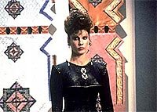
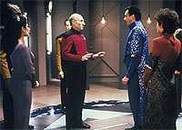
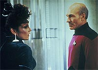
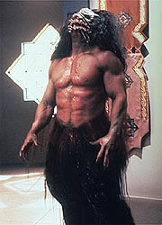
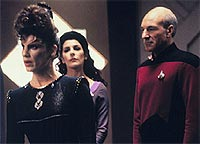

|
MANCHETE
DO EPISDIO
Histria
discute altos e baixos da f
religiosa, mas
no evita previsibilidade
Episdio
anterior | Prximo
episdio
Sinopse:
Data Estelar: 44474.5.
Uma transmisso de emergncia de uma estao cientfica da
Federao leva a Enterprise ao planeta Ventax II, onde Picard e
sua tripulao descobrem que os pacficos habitantes esto para
entregar o controle do planeta a Ardra, uma mulher que os habitantes
locais acreditam ser o demnio.
 Ardra
um ser mitolgico que teria assinado um contrato com os
Ventaxianos, onde eles ganhariam mil anos de paz e prosperidade em
troca de suas almas e seus pertences, incluindo todo o planeta, ao
final deste perodo.
O governo de Ventax II est convencido de que Ardra realmente est
de volta, mas Picard pretende provar que tudo no passa de um
fraude montada por uma aliengena para explorar a ingenuidade dos
Ventaxianos. Para isso, ele evoca um antigo precedente legal, e pede
por um rbitro.
 Data
escolhido para a funo. Ele deve presidir um julgamento e
decidir se a mulher que diz ser Ardra realmente a entidade mitolgica.
Picard no se saa muito bem no julgamento, mas Geordi La Forge
descobriu a fonte dos poderes de Ardra e tomou conta dela,
permitindo a seu capito que desmascarasse a fraude. A falsa Ardra
retira seu pedido e abandona o planeta.
Comentrios:
"Devil's
Due" fez o que o ator e diretor William Shatner (James Kirk)
queria com "Jornada nas Estrelas V - A ltima
Fronteira", mas na ocasio no conseguiu: estabelecer uma
viso crtica da f religiosa. De forma inteligente, este episdio
de A Nova Gerao conseguiu apresentar a questo de modo a
mostrar os dois lados --o que se ganha e o que se perde com as crenas.
 Infelizmente,
apesar do bom roteiro e dos argumentos inteligentes, o episdio
deixa de ser um dos melhores segmentos da srie por sua alta
previsibilidade. Enquanto reflexo, ele timo. Mas como
aventura, deixa a desejar.
A partir do momento em que Picard decide apostar sua prpria alma,
temos a certeza de que Ardra de fato uma impostora e ser
desmascarada at o final do episdio. No fosse por isso, o mistrio
poderia ter se mantido e talvez os roteiristas pudessem optar por
uma resoluo menos bvia para a trama.
 Tirando
esse importante seno, o episdio mantm as melhores tradies
de Jornada nas Estrelas. Os personagens esto com o seu
carisma habitual e a qumica entre Ardra e Picard at que funciona
de forma interessante. Alm do mais, o episdio serve para ativar
os neurnios daqueles que preferem no ficar apenas na superfcie
da histria que est sendo contada.
A f opera de forma interessante. Em essncia, o que ela faz
"desativar" o senso crtico das pessoas. Quando bem
direcionada, ela produtiva, fazendo com que se acredita na
possibilidade de realizar tarefas cuja anlise racional
provavelmente indicaria pequena probabilidade de sucesso.
Foi por esse mecanismo que os Ventaxianos obtiveram seus mil anos de
paz e prosperidade, com a superao de problemas quase incontornveis.
A crena de que Ardra era a garantia de sucesso fez com que eles no
se desanimassem na tarefa de recriar seu mundo.
Por outro lado, a "desativao" do lado racional pode
ser muito perigosa. F sem um direcionamento correto pode ser usada
por charlates cuja nica inteno se aproveitar de crenas
para delas obter algum benefcio --exatamente como a falsa Ardra
tenta neste episdio.
 Alis,
estamos cansados de encontrar exemplos dissos em nosso cotidiano. Inmeras
so as Igrejas recm-fundadas (principalmente de carter evanglico)
que esto longe de ser guias genunos para a f das pessoas.
Muito ao contrrio, o objetivo quase sempre levar vantagem sobre
os pobres fiis. E na vida real no h Enterprise, nem capito
Picard...
Citaes:
Data - "The
advocate will refrain from making her opponent disappear."
("O advogado ir se abster de fazer seu oponente
desaparecer.")
Trivia:
 A histria deste episdio foi originalmente concebida h dcadas,
para a srie "Jornada nas Estrelas - Phase II",
que nunca aconteceu.
A histria deste episdio foi originalmente concebida h dcadas,
para a srie "Jornada nas Estrelas - Phase II",
que nunca aconteceu.
A
atriz que interpreta Ardra mais conhecida como a ex-esposa do
personagem de Tom Selleck, no seriado Magnum.
Ficha
tcnica:
Histria de Philip
Lazebnick
Roteiro de Philip Lazebnick & William Douglas
Lansford
Direo de Tom Benko
Exibido em 04/02/1991
Produo: 087
Elenco:
Patrick Stewart como
Jean-Luc Picard
Jonathan Frakes como William Thomas Riker
Brent Spiner como Data
LeVar Burton como Geordi La Forge
Michael Dorn como Worf
Gates McFadden como Beverly Crusher
Marina Sirtis como Deanna Troi
Elenco convidado:
Marta Dubois como
Ardra
Paul Lambert como dr. Clarke
Marcello Tubert como Jared
Thad Dalmey como o monstro demonaco
Tom Magee como o monstro Klingon
William Glover como Marley
Episdio
anterior | Prximo
episdio
|